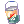
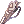
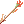
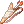
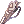
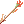
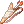
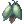

Frequently Asked Questions

|
| Portuguese |
General Questions
I am new! What should I do?
First of all, create your account and, if you haven't installed the game yet, hop to our Download page and follow the install instructions.
Check out Introduction to Ragnarok Online if you're brand new to the game, or Introduction to Renewal if you've played Ragnarok in the past, before the Renewal update.
Otherwise, if you're already familiar to the game but starting on the server, check out the Getting Started page, which will set you up with almost everything you need to know to start on NovaRO.
I'm having errors when trying to play! / I'm lagging!
Our Troubleshooting page contains most commonly-found errors and how to resolve them and the Lagging page can help you find your ping to the server, perform a trace route and diagnose the source of your lag.
Gameplay Questions
What is the max Level/Job Level/Stats/ASPD?
For more information about the server, visit the Server Information page.
Where should I level?
Check our Leveling Guide for new players.
Where is the Job Changer?
The Job Changer NPC and other convenience NPCs can be found inside the Main Office building in Prontera, just a little to the left of the center of the town.

There you can also find a plethora of convenience NPCs and item shops.
Can I job change into a 3rd Class without transcending/rebirth?
While possible, you will miss out on a lot of benefits if you don't transcend/go through the rebirth process and it is highly recommended to do so. Upon transcending/rebirthing, you gain additional MaxHP, MaxSP, and stat points. You will be able to learn trans-only skills and wear trans-only equipment as well. It is also highly recommended to reach Job Lv 70 before changing into 3rd Class, as any missing skill points will be lost forever.
This is the typical character progression:
In NovaRO, class-crossing is not enabled. In other words, if you were an Assassin and have transcended into High Novice, you can only job change into High Thief, then into Assassin Cross, then Guillotine Cross.
Expanded classes and Doram race typically progress as follows. Note that they are unable to transcend/rebirth, so their level will not be reset to 1/1 when job changing.
| Initial Class | 1st Class | 2nd Class | |
|---|---|---|---|
|
Novice |
Super Novice (99/99) |
Expanded Super Novice (200/70) | |
Gunslinger (99/70) |
Rebellion (200/70) | ||
Ninja (99/70) |
Kagerou (Male only) (200/70) | ||
Oboro (Female only) (200/70) | |||
Taekwon Kid |
Taekwon Master (99/50) |
Star Emperor (200/70) | |
|
Soul Linker (99/50) |
Soul Reaper (200/70) | ||
Summoner (Doram Race only) (200/60) | |||
There are some penalties when playing a non-transcendent class:
- You will have less HP and SP, and less stat points to distribute.
- You cannot wear trans-only equipment.
I can't decide which class to play, help!
While your class choice will vary heavily based on your playstyle, you can play the game confortably have fun with any class.
Some popular choices for beginners are: Ranger, Rune Knight, Guillotine Cross and Mechanic.
| Job Class | Role Suitability (in PvM) | Main Damage Type | ||
|---|---|---|---|---|
| DPS | Tank | Support | ||
Rune Knight |
OOO | OO | × | Melee Physical |
Royal Guard |
OO | OOO | O | Melee Physical |
Mechanic |
OO | OO | OO | Ranged/Melee Physical |
Genetic |
OOO | O | O | Ranged Physical |
Guillotine Cross |
OOO | O | × | Melee Physical |
Shadow Chaser |
OO | O | O | Mixed |
Ranger |
OOO | × | × | Ranged Physical |
Minstrel |
OO | × | OO | Ranged Physical/Magic |
Wanderer |
OO | × | OO | Ranged Physical/Magic |
Warlock |
OOO | O | O | Magic |
Sorcerer |
OO | O | OOO | Magic |
Arch Bishop |
O | OO | OOO | Magic |
Sura |
OO | OOO | O | Melee Physical |
| Job Class | Role Suitability (in PvM) | Damage Type | ||
|---|---|---|---|---|
| DPS | Tank | Support | ||
Kagerou |
OO | × | O | Ranged Physical |
Oboro |
OO | × | O | Magic |
Rebellion |
OOO | × | × | Ranged Physical |
Super Novice |
O | OO | OO | Melee Physical/Magic |
Summoner (Doram) |
OO | OO | OO | Ranged Physical/Magic |
Star Emperor |
OOO | × | × | Melee Physical |
Soul Reaper |
OO | O | OO | Magic |
I job changed but now I'm stuck at Lv 99!
It is a common visual bug. You can:
- Keep leveling. When you reach Lv 100, the experience bar will fix itself.
- Relog. When you log back in your experience bar should display the correct EXP amount.
How to get class-specific consumables/catalysts?
| Type | Applicable Job Class | How to obtain |
|---|---|---|
 Quality Rough Runestone and Quality Rough Runestone and  General Rough Runestone General Rough Runestone
|
Rune Knight | Rune Merchant in the Main Office. See Rune Mastery. |
 Holy Water Holy Water
|
Royal Guard, Priest | Tool Dealer NPC (by the respawn point in almost every town). Create with Aqua Benedicta skill. |
| Pecopeco, Dragon, Griffon, Cart, Mado Gear, Falcons, Wargs | Knight, Crusader, Merchant, Mechanic, Hunter, Ranger | Universal Rental NPC (by the respawn point in almost every town) |
| Cannon Ball, Magic Fuel, other Mechanic accessories and supplies | Mechanic, Genetic | Mado Dealer in the Main Office. |
Guide Books for  Pharmacy, Pharmacy,  Special Pharmacy, and Special Pharmacy, and  Mixed Cooking Mixed Cooking
|
Alchemist, Biochemist, Genetic | Aldebaran Alchemist Guild |
| Materials for Pharmacy, Special Pharmacy, and Mixed Cooking
|
Alchemist, Biochemist, Genetic | Alchemy Supplies, Aldebaran |
| Embryo | Alchemist, Biochemist, Genetic | Create with Pharmacy. Purchase Embryo in the market @go market.
|
| Homunculus Food (Scell, Garlet, Zargon) | Alchemist, Biochemist | Geffen Tool Dealer |
| Homunculus, Homunculus S, and Cute Pet Food | Alchemist, Biochemist (Homunculus), Genetic (Homunculus S), all (Cute Pet) | Pet Groomer, Prontera . See Pet System. |
| Poison Bottle | Guillotine Cross | Can be crafted or obtained by exchanging Thanks Invest Tickets into Red Paw Jelly Bag with the Thanks Ticket Machine in Malangdo . See Guild Dungeon Investment System. |
 Surface Paint and  Face Paint Face Paint
|
Shadow Chaser | Part-Timer in Shadow Workshop, Prontera |
 Falcon Flute Falcon Flute
|
Hunter, Sniper, Ranger | Falcon Flute Trader in Hunter's Guild, Hugel |
 Special Alloy Trap and Special Alloy Trap and  Special Alloy Trap Box Special Alloy Trap Box
|
Ranger, Shadow Chaser, Rebellion | Ammunitions Expert in the Main Office and Trap Specialist in Midgard Camp |
| Arrow, Arrow Quiver | Ranger, Minstrel, Wanderer, Thief, Shadow Chaser | Arrow Dealer in the Main Office. Arrow Dealer in Payon . Inventor Jaax inside Payon Equipment Shop . |
 Hunting Arrow,  Hunting Arrow Quiver,  Elven Arrow,  Elven Arrow Quiver Hunting Arrow,  Hunting Arrow Quiver,  Elven Arrow,  Elven Arrow Quiver
|
Hunter, Sniper, Ranger; Minstrel, Wanderer | Mora Tool Dealer, Quiver Maker |
| Special Arrows (e.g. Immaterial Arrow) | Ranger, Minstrel, Wanderer, Thief, Shadow Chaser | Create with Arrow Crafting. |
 Throat Lozenge (Neck Protect Candy) and Throat Lozenge (Neck Protect Candy) and  Regrettable Tears Regrettable Tears
|
Minstrel, Wanderer | Harive in Comodo |
| Spell Book (Mage, Wizard, Warlock spells) | Warlock | Lea in Geffen Mage Guild |
| Comet Spell Book and Tetra Vortex Spell Book | Warlock (Lv 140) | Ultimate Spell Books Quest |
| Scarlet, Yellow, Lime Green, and Indigo Wish Points | Mechanic, Sorcerer | Point Merchant in the Main Office, and Point Merchant in Midgard Camp |
| Red, Yellow, and Blue Gemstones | Acolyte, Priest, Wizard, Sage, etc | Tool Dealer NPC (by the respawn point in almost every town) |
| Empty Bottle | Acolyte, Alchemist | Tool Dealer NPC (by the respawn point in almost every town) |
| Ammunition and Cartridge Shop | Gunslinger, Rebellion | Ammunitions Expert, in the Main Office. |
| Cartridge Maker | Gunslinger, Rebellion | Magazine Dealer Kyle, in the Main Office. |
| Gunslinger Weapons | Gunslinger | Gunslinger Guild, Einbroch and Trading Merchant, Izlude Tool Shop |
| Rebellion Weapons | Rebellion | Firearms Dealer, in the Main Office. |
| Shuriken, Kunai, Kunai Scrolls, Elemental Charms, Magic Orbs | Ninja, Kagerou, Oboro | Ninja Supplier, in the Main Office. |
| Ninja Equipment Craftsmen | Ninja, Kagerou, Oboro | Master Weapon Craftsman and Master Armor Craftsman, Ninja Hideout, Amatsu |
 Catnip Fruit,  Shrimp, and Lv 100 Doram equipment Shrimp, and Lv 100 Doram equipment
|
Summoner (Doram) | Doram Shop, in the Main Office and Doram Shop in Lasagna |
What equipment should I use? / How to build my character?
Aside from asking players in-game or on the specific Discord class channels, the wiki has a compilation of player-written guides in Class Guides.
Players are constantly experimenting with both old and new equipment and discovering new interactions, meaning the best setup can change frequently.
How many DEX do I need to reach instant cast?
See also: Cast Time
In Renewal, you need (DEX x 2) + INT = 530 to eliminate Variable Cast Time (VCT). Some examples considering total stats:
- 530 INT
- 265 DEX
- 170 INT and 180 DEX
- 190 INT and 170 DEX
Your INT and DEX stats can reduce the VCT. However, this will not reduce Fixed Cast Time, which can only be reduced by certain buffs or equipment.
Keep in mind percentage (%) reductions on gear will not stack additively with the reduction provided by DEX and INT, but multiplicatively, meaning 265 total DEX (usually 50% reduction in VCT) paired with 50% VCT decrease from gears will amount instead to 75% overall reduction.
There are several ways of reducing overall cast time:
- Wearing cast time-reducing equipment and cards (e.g. Crown of Deceit, Kathryne Keyron Card, Cunning Shadow Set).
- Buff skills (e.g. Archbishop's Clementia and Sacrament, Kagerou/Oboro's 16th Night, Sorcerer's Summon Ventus + Elemental Control Lv 1).
- Consuming stat foods (particularly INT and DEX foods).
- Have the Bard class buff Poem of Bragi for After Cast Delay (global cooldown) reduction.
- Wearing Temporal DEX Boots while also having 120 base DEX. This will reduce Fixed Cast Time by 0.5 second.
Note that % Fixed Cast Time reduction will not stack with other sources of Fixed Cast Time reduction. Only the highest % Fixed Cast Time reduction will be applied.
How do I delete my character?
- Go to the Character Select screen. Select the character you want to delete and click the Delete button.
- The character will sit and a timestamp will appear above them (it should follow your computer's clock).
- If you're certain you will delete that character, let it sit and return to it in 24 hours. In the mean time, do not click Cancel, and do not log in with that character.
- After 24 hours, you can click Del and you will be prompted to input the "deletion password," which is your account's email. You can view your account email by logging in the website.
- If you changed your mind and do not wish to delete that character, click Cancel. The timestamp will disappear and you will be able to log in with that character as usual.
- You can bypass the 24-hours wait by setting a PIN on your account in the website.
What is PC, R>, LF>, LFM>, LFP>, etc?
- BMD : Bios Island, Morse's Cave and Temple of the Demon God, respectively.
- DPS : Damage per Second. Generally refers to Ranger or Rebellion as they are usually the main damage dealers in most parties.
- LF : Looking For
- LFM : Looking For Members. May be used to recruit party members.
- LFP : Looking For Party. May be used when you want to join parties. You should also state your Level.
- MH : Monster Hunter
- NONR : No Offer, No Reply. Generally means you should state your price when offering to buy or sell something, and try to haggle with the other person.
- OGH : Old Glast Heim
- PC : Price Check. You should do this in the #trade channel in-game.
- R : Recruiting (may be used to recruit party members or guild members)
- RGM : Recruiting Guild Members
- RTG : Ready to Go
- This may indicate that the party will start the instance as soon as you join, or they are already inside the instance and you have to hurry and catch up to them. You have to beware of the second one, as some instances give you kill quest/hunting quest of a specific enemy that only appear at certain points of the instance, and you can only claim rewards if you are present when the party kills the enemy. For example, if an OGH party leader/member says their party is RTG, it's a good idea to ask if they're already inside and have killed Root of Corruption. If they've killed it then you won't be able to claim the rewards, and it'd be best for you to join another party.
- WTB : Willing To Buy
How do I farm Zeny? Where should I go to farm Zeny?
The most common way to farm Zeny is by selling loot from monsters to NPC. Generally, farming is done after having leveled up a bit and have upgraded from starter gears, however there are some maps that allow you to achieve decent money making early in your journey. Below is a list of such maps, their recommended levels and some of the items you're looking for:
- Gonryun Dungeon 1F (gon_dun01): Levels 90~100. Honey and Royal Jelly.
- Audumra Grass Land (ra_fild01): Level 100+. Blood of Wolf (+20 INT Food ingredient) and Crimson Dagger.
- Magma Dungeon 2F (mag_dun02): Levels 100~120. All loot, including Doram Equipment that can be exchanged into Doram Tokens.
- Rachel Sanctuary 1F - 3F (ra_san01/02/03): Level 110+. Bloody Runes, Witch Starsand and Prickly Fruit.
- Juperos 1F (juperos_01): Levels 115~125. All loot.
- Geffenia (gefenia01/02/03/04): Level 120+. Diamond Ring, Gold Ring, Royal Jelly and Crimson Violins.
Creating a Merchant for  Overcharge and Discount will help you a lot in maximizing the zeny you obtain from selling loot to NPCs and also reducing costs of consumables. The same Merchant will also have access to the
Overcharge and Discount will help you a lot in maximizing the zeny you obtain from selling loot to NPCs and also reducing costs of consumables. The same Merchant will also have access to the  Vending skill, allowing you to sell any valuables you may find to other players in NovaRO's Market (@go 37).
Vending skill, allowing you to sell any valuables you may find to other players in NovaRO's Market (@go 37).
Using @autotrade (@at) while using Vending will log you out of the character, but keep your Vending Shop online. Keep in mind you won't be able to use another character on the same account while autotrading.
Some seemingly "trash" loot may still be useful, whether it's for a quest, for crafting/brewing, or used as skill catalysts. You can make a quick buck stocking up these materials and selling them to other players. You can use the @whobuys (@wb) command in-game to see if anyone is buying an item.
What is and how do I open a buying shop?
Buying Shops can be opened by any character, check out the  Buying Store page for more information.
Buying Store page for more information.
How do I get X or Y equipment?
There are numerous equipment available in the game and various ways of obtaining them. You can check the majority of those on the Equipment Guides page.
The most common way of obtaining them is by farming from monsters in overworld fields, dungeons, or Instances. Several areas require you to complete pre-requisite quests before you can access them.
Is there an item/monster database?
Through the @iteminfo (@ii) and @mobinfo (@mi), you can access both item and monster information in-game.
The NovaRO Market also has item descriptions, as well as market listings.
Other popular outside sources are:
- Divine Pride : Provides a lot of general information and more about gears, cards, skills and monsters. Divine Pride is an independent, server-agnostic database, and not all information will apply directly to NovaRO.
- iRO Wiki : Although tailored for iRO, it can still provide quest guides and skill information for some legacy content.
How do I perform trades greater than 1 billion Zeny?
You can easily exchange large quantities of zeny by using 17 Carat Diamonds.
What is a homunculus? Why mine doesn't work?
Check out the Homunculus page for everything related to Homunculus, including how to set up its AI and troubleshoot it.
Common Player Questions
In all support request cases, please be truthful in all your correspondence with a Game Master.
Hiding details will not only hinder resolving the issue, but may also result in punishment.
I accidentally dropped / sold the wrong items to NPC, can GM refund me?
Yes, if the item was not picked up by another player. If you are not sure, please open a support ticket. Notice that we will only do this once, as we have protections in place against item dropping. Remember to keep all your valuables in your Favourites tab and lock it from NPC selling.
I lent my items and the player refuses to give them back. Can GM help me?
If you have proof that the item was to be borrowed, you may open a player report for scamming. Note that your item will be deleted, as GMs will not refund or return any items lost due to player mistakes.
Someone logged onto my account and stole my gear. Can GM help me?
No. Account sharing is not encouraged for a reason and what happens to your account is your responsibility. Please keep your passwords secure and change your passwords at regular intervals.
I missed a 0 when I set up my vending shop and sold my item under-priced, can I get a refund?
No. GMs will not refund player-to-player vending transactions, as this would be unfair to the person who bought the item.
I accidentally refined/enchanted an item and it broke. Can GM refund me or roll back the item?
No. We are unable to offer any support for item losses that transpired due to failed or incorrect refine/enchantment attempts.
I am stuck in an instance and can't use any skills. Help!
Try relogging. If the problem still persists, please message a GM online.
I cannot add skill points to my character!
Remove all your equipped items (including ones from the costume tab), and type @clearcostume to remove any costume effects. You should be able to add skill points after that.
I purchased Nova Points but did not receive them.
Please submit a support ticket and [GM] Nova will sort it out with you. Make sure to include the payment method, your email, date, and amount purchased in the ticket to speed up handling time.
I forgot my account ID, can you recover it for me?
Submit a support ticket and we will send you the account ID to the email that is registered on the account. If you no longer have access to the email registered on the account or if the email is fake, you will not be able to recover the account ID.
I found a bug! Where do I report it?
Please make a post in the bug report section, with as many details as possible. If you are able to, include screenshots or recordings, and describe what was done to trigger the bug, what the expected behavior was, et cetera. Include as many details as possible.
I found a bot! Where do I report it?
Report your findings privately to a GM in-game or Discord. Provide as many details as possible. You do not need to know a player name to report a suspect. At its simplest, a map name will do, however we will of course appreciate such details as a player name, class, or skills used.
If you know the name of the suspect, you can report it directly in game by using @botreport
Someone is harassing me / won't leave me alone! What can I do?
If you find that one of our server rules was broken, please make a post in the player reports section of the forum. Include screenshots or recordings and what the reported player was doing (e.g. scamming, griefing, using offensive language) will all help. As well, you may use /ex player to block them from messaging you.
How to report rule breakers?
Please use the following section to provide us with better reports. Quite often, we cannot punish a player because we are lacking information.
Using the replay feature
This is by far the easiest method to report offending players. While in-game, follow these steps to open the recording feature:
- Click on the Rec button from the status bar.
- Start the replay, give it a name and press Start.
- When you are finished recording, press Stop.
- Open your RO folder, go in the Replay folder and upload the file on the forum or send it directly to a GM if requested.


Take Screenshots
Take as many screenshots as necessary and upload them on the forum. We recommend using imgur to host the images.
In your screenshots, please show us that you've tried to talk with the problematic players and attempted to solve the issue by yourself first.
Use the forum
Avoid requesting GM assistance for rule breaking reports. We prefer that you use the forum to report such issues as it is easier for us to see the evidence you've collected.